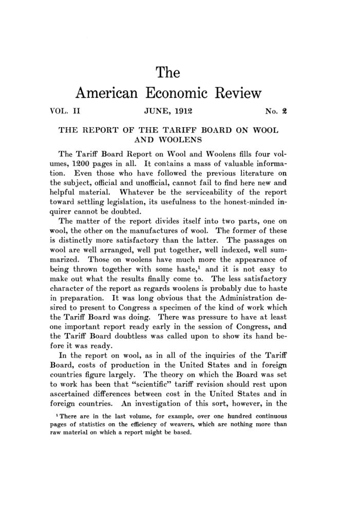

Taussig, 1912: o que o custo de produção decide na tarifa da lã?
Leitura: 8 min
A Tariff Board mediu o custo da lã em três regiões e achou de zero a 19 centavos por libra. Para Taussig, os dados ajudam o economista, mas não dizem ao legislador qual tarifa fixar.


O relatório da Tariff Board sobre a lã e os tecidos de lã ocupa quatro volumes, 1.200 páginas. F. W. Taussig, de Harvard, abre sua resenha reconhecendo a massa de informação nova e a utilidade do trabalho para o pesquisador. A pergunta do artigo é outra: o que esse levantamento resolve para quem precisa votar a tarifa?
A junta fora criada sobre uma teoria: a revisão “científica” das tarifas deveria apoiar-se nas diferenças, apuradas, entre o custo de produção nos Estados Unidos e no exterior. Taussig aceita examinar o relatório nesses termos e mostra, passo a passo, onde a teoria encontra seus limites.
Como medir o custo de um produto conjunto?
A dificuldade começa na natureza da lã. Ela é produto conjunto da carne de carneiro, e ambos são, muitas vezes, produtos conjuntos da agricultura em geral. Além disso, os custos variam conforme a qualidade das fontes de suprimento: algumas localidades produzem mais barato que outras. Qual custo deve ser tomado como representativo, o mais alto ou o mais baixo?
O método da junta, que Taussig considera bem escolhido, tem três passos. Primeiro, apura o custo total do rebanho, isto é, as despesas diretas do criador com alimentação, cuidado e abrigo. Segundo, deixa de fora a terra, cujos juros costumavam ser somados ao custo nas audiências do Congresso. Terceiro, desconta as receitas que não vêm da lã, sobretudo a venda da carne. A diferença é o custo separado da lã. Taussig observa que o procedimento pode ser comparado ao sugerido por Marshall nos Principles of Economics.
Por que o custo da lã variava de zero a 19 centavos?
O resultado, que a própria junta apresenta como aproximado, divide o país em três regiões. Na de agricultura geral, do rio Missouri para leste, o custo da lã é nulo: os ovinos são poucos em cada fazenda, custam pouco para manter e são em geral mestiços de raças de carne, cuja venda paga as despesas. Ali, conclui Taussig, a criação continuaria com ou sem imposto.
A região de pastagens, onde está a maior parte da produção, é heterogênea. No Sudoeste, de clima ameno e rebanhos Merino criados sobretudo pela lã, o custo é provavelmente o mais baixo do país e talvez tão baixo quanto o dos concorrentes estrangeiros. No Noroeste, o inverno exige abrigo e forragem colhida, os rebanhos tendem a mestiços e a carne pesa mais na receita. E, onde a agricultura se torna possível, ela avança sobre a criação: no Texas, o número de ovinos caiu à medida que o leste do estado foi ocupado por agricultores.
A terceira região é um enclave no leste de Ohio e em áreas próximas da Pensilvânia, da Virgínia Ocidental e de Michigan, com grandes rebanhos Merino em terras acidentadas e sujeitas à erosão. É ali que o custo é mais alto e a necessidade de proteção, maior. Industrialmente de pouca importância, observa Taussig, o enclave teve influência política notável na manutenção dos impostos sobre a lã.
O que esses números dizem ao legislador?
Pouco, na avaliação de Taussig. Quem acredita que há algo precioso no suprimento doméstico de lã continuará a defender um imposto alto; quem pensa na lógica da indústria nascente, segundo a qual a proteção só se justifica se levar o país a abastecer todo o próprio consumo a preços não mais altos que os de fora, terá de abandonar essa esperança no caso da lã. O relatório mostra que a possibilidade de ampliar a produção doméstica fora da região de agricultura geral é desprezível.
Quanto à alíquota, o dilema é o do custo variável. Uma tarifa que iguale o custo do produtor mais caro dá mais que o necessário a quem produz mais barato; uma que cubra só o mais barato aproxima-se da lã livre e sacrifica os produtores em pior situação. Taussig diz não conhecer critério para escolher entre o criador de Ohio, o do Sudoeste e o do Noroeste. Sua própria conclusão, que diz apoiar-se em raciocínio geral sobre o comércio internacional e não no levantamento, é que não há bom fundamento para o imposto sobre a lã.
Para Taussig, a investigação “fornece munição a qualquer dos partidos, mas não permitirá a nenhum derrotar o outro”. (“supplies ammunition for either party, but will not enable either to rout the other”)
Onde o relatório chega a conclusões claras?
Em três pontos. O primeiro é a forma de cobrança. A lã bruta varia muito em impurezas: algumas perdem três quartos ou quatro quintos do peso na lavagem, outras apenas um quinto ou um quarto. O imposto específico de 11 centavos por libra de lã bruta pesa mais sobre a que mais perde e tornou quase proibitiva a importação de certas lãs, sobretudo as da região argentina. A junta recomenda cobrar pelo conteúdo de lã lavada; a alternativa seria o imposto ad valorem, sujeito a subfaturamento. Taussig considera qualquer das duas melhor que o sistema vigente e a lã livre melhor que ambas.
O segundo é o sistema compensatório da Schedule K, a parte da tarifa sobre lã e lanifícios. Os impostos sobre os tecidos deveriam apenas compensar o fabricante pelo imposto pago sobre a matéria-prima; o relatório mostra que compensam muito mais que isso. Taussig, que sustentava esse ponto havia anos, registra que a demonstração dá razão a quem dizia que as alíquotas efetivas sobre os tecidos eram maiores do que pareciam.
O terceiro é a eficiência da indústria. O relatório afirma que, em alguns ramos, a eficiência das fábricas americanas é baixa e o custo, alto. Taussig aponta uma consequência curiosa da doutrina do custo de produção: quanto pior a máquina ou a localização do fabricante, mais alto o seu custo e maior a proteção a que se julgaria com direito.
Por que a firma representativa faria diferença?
Nos tecidos, Taussig não vê dificuldade intransponível na comparação de custos. Bastaria recorrer a algo como a firma representativa de Marshall: deixar de lado tanto as fábricas excepcionalmente bem dirigidas quanto as atrasadas ou experimentais e construir um estabelecimento típico das condições normais do ofício. A junta preferiu apresentar dados detalhados de estabelecimentos concretos, sem reuni-los numa comparação direta. Para Taussig, o legislador que quiser aplicar a teoria do custo de produção aos tecidos terá de cavar sozinho nos volumes do relatório.
O fecho separa duas questões. A fundamental, proteção ou livre-comércio, não seria resolvida por nenhuma legislação possível naquele momento. A que estava em pauta era mais simples: mais ou menos proteção, a tarifa vigente ou um sistema podado e moderado. Nessa disputa, diz Taussig, o relatório ajuda, ainda que se rejeite o princípio que levou à criação da junta. E, para o economista, os volumes trazem exemplos de economias internas e externas, de custo comparativo e da composição do preço final de um terno.
Para Taussig, os economistas “encontrarão por muito tempo nesses volumes uma mina de informação”. (“Economists will long find in these volumes a mine of information”)
Na minha leitura
Na minha leitura, o artigo é uma lição sobre o que a medição pode e não pode fazer em política econômica. O levantamento de custos é útil e, em alguns pontos, decisivo: mostrou que o imposto específico distorce a importação e que os impostos compensatórios protegem mais do que declaram. Mas a pergunta central, qual custo deve servir de referência, não é empírica; é uma escolha que os dados apenas iluminam.
O argumento da firma representativa mostra o outro lado do mesmo problema. Para comparar custos é preciso um conceito que os torne comparáveis, e esse conceito é teórico. Sem ele, a abundância de números concretos não se converte em resposta; com ele, a resposta passa a depender de uma construção que alguém precisa defender.
Glossário
- Tariff Board
- junta federal criada para estudar custos de produção como base para a revisão tarifária.
- Produto conjunto
- bem produzido junto com outro no mesmo processo, como a lã e a carne de carneiro.
- Schedule K
- parte da tarifa americana que fixava os impostos sobre a lã e os tecidos de lã.
- Imposto compensatório
- imposto sobre o tecido destinado a compensar o fabricante pelo imposto pago sobre a lã.
- Imposto específico
- imposto fixado por unidade física, como centavos por libra, e não sobre o valor.
- Ad valorem
- imposto calculado como porcentagem do valor da mercadoria.
- Firma representativa
- noção de Marshall: empresa típica das condições normais de um ramo, usada para pensar o custo normal.
Fontes
- The Report of the Tariff Board on Wool and Woolens — F. W. Taussig (Harvard University) (pp. 257–268). JSTOR · Internet Archive (PDF)
- Edição completa, com os demais artigos: Nº 119 do Arquivo.
Documento em domínio público (EUA, publicado antes de 1931), via JSTOR Early Journal Content e Internet Archive. Resumo e comentário do autor deste site, sem afiliação com a American Economic Association. Encontrou um erro? Escreva: a correção é publicada no próprio texto, com data.
↑ Nº 119 · Junho de 1912: a tarifa da lã, a arte de gastar e a equação de trocas Mitchell, 1912: por que a arte de gastar ficou para trás? →